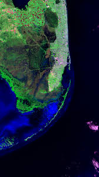

Las biofirmas son indicadores observables que pueden sugerir la presencia de actividad biologica pasada o presente en un entorno planetario.
La deteccion simultanea de oxigeno, ozono y metano en desequilibrio quimico podria indicar procesos biologicos activos.
Cambios espectrales asociados a pigmentos fotosinteticos, como el denominado "red edge", constituyen posibles firmas de vegetacion extraterrestre.
Fraccionamientos isotopicos caracteristicos pueden revelar procesos metabolicos.
Es fundamental diferenciar biofirmas autenticas de procesos abioticos que puedan generar señales similares.
